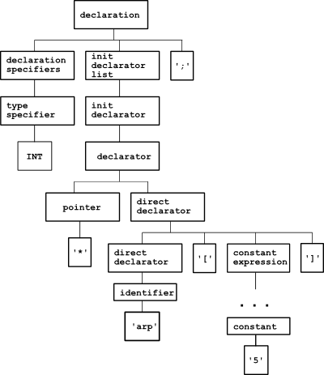

CSTs - Concrete Syntax Trees (a.k.a. Parse Trees) and ASTs - Abstract Syntax Trees (a.k.a. Syntax Trees) are two terms that come up a lot in compiler & parser nomenclature. However, it is not always understood what is the difference between the two, because they are closely related.
In this article I attempt to explain the difference, at least for myself.
Concrete Syntax Trees
CSTs are a representation of grammars in a tree-like form. Here's a definition from the Dragon book [1]:
A parse tree pictorially shows how the start symbol of a grammar derives a string in the language.
That is, the CST is a one-to-one mapping from the grammar to a tree-form. An example will make this easier to understand.
Consider parsing the C statement return a + 2;. Following the ANSI C grammar defined in K&R2 and appearing in its YACC representation in various places on the web, the parse tree of this statement looks thus:

And this is not even the complete tree. The path between conditional_expression and additive_expression goes through the sequence: logical_or_expression, logical_and_expression, inclusive_or_expression, exclusive_or_expression, and_expression, equality_expression, relational_expression and shift_expression. I kid you not! There are two more nodes between unary_expression and constant as well.
Indeed, this is a very formal representation that strictly shows how the parser understands the statement return a + 2;, but it is not a very useful representation to work with, is it?
This is where ASTs come in.
Abstract Syntax Trees
ASTs are simplified syntactic representations of the source code, and they're most often expressed by the data structures of the language used for implementation [2]. Quoting from the Dragon book again:
Abstract syntax trees, or simply syntax trees, differ from parse trees because superficial distinctions of form, unimportant for translation, do not appear in syntax trees.
ASTs don't show the whole syntactic clutter, but represent the parsed string in a structured way, discarding all information that may be important for parsing the string, but isn't needed for analyzing it.
Here's an AST for return a + 2;, as generated by pycparser:
Looks like something much more manageable, doesn't it? Note that an AST conveys information in the internal nodes as well, and not only at the leaves. So, instead of going through a long list of expression nodes just to represent the type of the expression, a simple op attribute in a BinOp node does the job. Also, the AST doesn't hold syntactic nodes like ';', because these are useless for analysis.
ASTs are usually the last product of the front-end of a compiler. They represent the structure of the code in a compact and useful way that facilitates convenient analysis and further processing.
From a CST to an AST
Parsers usually either construct ASTs directly in their actions, or first construct CSTs and then convert them to ASTs. It's interesting to note that CSTs are trivial to build once you have a grammar written [3], and some tools will build it automatically. After all, a CST is just another representation of the grammar. But beware of tools that promise to automatically build ASTs - this can work in a general sense only for trivial grammars, and what you'll get is most likely a CST rather than an AST.
For some languages, it is far from trivial to construct an AST from a CST. A good example is the syntax of type declarations in C, which is known to be tricky.
Consider the declaration int* arp[5]; - an array of 5 pointers to int. Here's its parse tree, according to the ANSI C grammar:
Clutter aside, there are two other problems here that make analysis difficult:
- Note that the pointer node is actually above the array, so working through the CST directly, it can be thought that we've declared a pointer to an array! This is the "reverse logic of declarations" problem of C.
- Where is the array name? It's buried deep down in the tree, which isn't very convenient.
Because of these problems, it would be very difficult to work directly with a CST for C, without converting it to AST. pycparser converts to AST on the fly (without generating an explicit CST), and here's the AST that represents int* arp[5];:
Both problems are solved. The pointer is now clearly below the array, and the variable name was raised to the top-most node. This AST can be just read out loud to produce the correct interpretation of the declaration: "arp is an array of 5 pointers to int".
Conclusion
The front-end of a compiler can be seen as a process that transforms the input from its most concrete form (statements in the source language) to its most abstract form - stored in internal data structures and ready for analysis & translation.
CSTs and ASTs are two steps in this process. CSTs are more concrete, as they represent the input in a tree-like form, in the way it was parsed by the parser. This form only conveys syntactic information, and thus is simple to create from a grammar, and difficult to analyze.
ASTs are more abstract. They drop all the syntactic clutter and focus on the structure of the input, representing it in a hierarchical data structure useful for analysis & translation.
ASTs are either built on-the-fly in the parser's actions, or constructed from a CST at a later stage. In either case, ASTs are not always simple to construct from the grammar / CST, and for some languages and constructs require non-trivial processing.

| [1] | "Compilers: Principles, Techniques, and Tools" by Aho, Sethi and Ullman |
| [2] | For dynamical languages like Perl, Python, Ruby, Lisp etc. it's as simple as just shoving all sub-productions into a single array and returning it. The result will be a recursively nested array of arrays that represents the tree. This representation is easy to build, but not so easy to traverse meaningfully, so it's rarely used. |
| [3] | Which makes their implementations flexible. Unlike the CST, which is tied quite strictly to the formal grammar of the language, ASTs are "freehand" data structures that can be built in different ways, augmenting as much information as required by the next stages of the compiler/translator. |